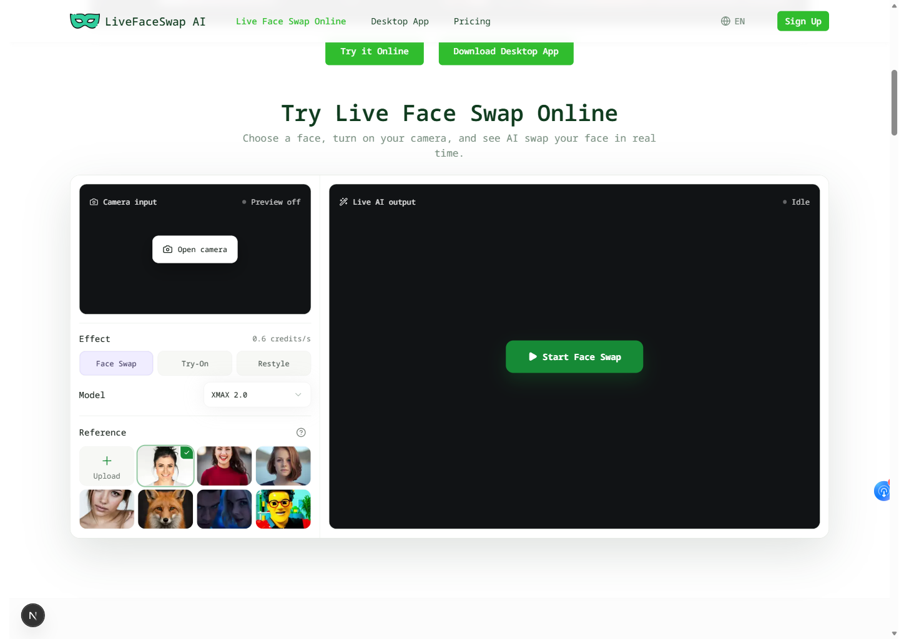
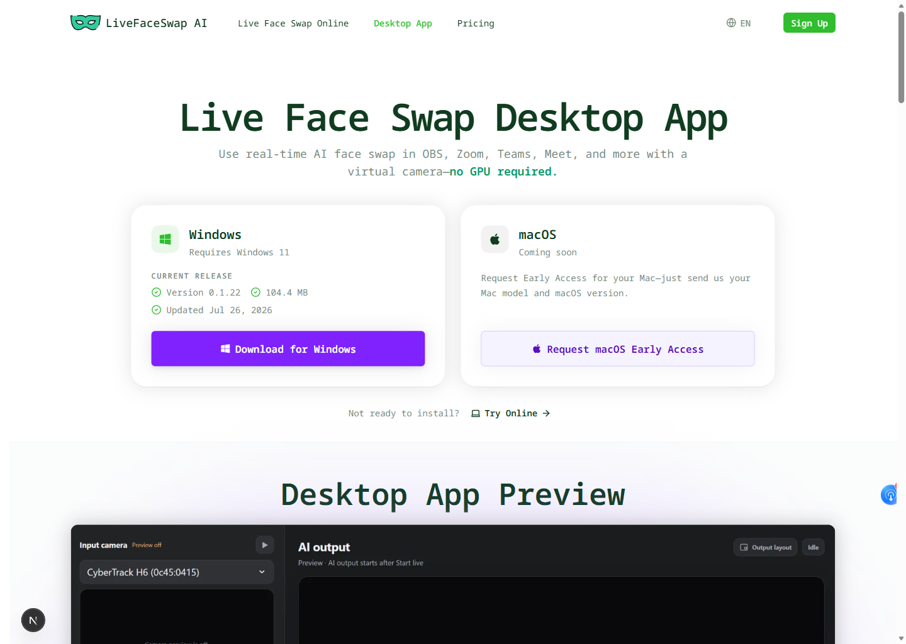

Authorize a reference
Use a portrait, outfit, or style reference only with the subject's permission.
A compact public map for understanding LiveFaceSwap AI workflows, finding the canonical product repository, and routing feedback without exposing private faces, account data, or security details.

The key distinction is output routing: the browser is an installation-free preview, while Desktop creates the LiveFaceSwap Camera path used by compatible Windows 11 software.
Use a portrait, outfit, or style reference only with the subject's permission.
Compare camera input and AI output across Face Swap, Try-On, or Restyle.
Stay in preview mode or install Desktop when another app needs a camera source.
Select LiveFaceSwap Camera in compatible software and verify the result before going live.
These paths share cloud AI and a visible pre-session metered rate, but they serve different output needs.
Fast setup for testing a webcam and authorized reference. It does not expose a virtual camera to other applications.
Open LiveFaceSwap AI onlineCloud-processed live output exposed as LiveFaceSwap Camera. A stable connection is required; the public download is Windows 11 only.
Open the Desktop workflowUse the matching product surface when writing a reproducible report. Never attach unredacted personal media to a public ticket.

Choose the route based on whether the details are safe for public discussion.
Reproducible workflow, documentation, accessibility, and roadmap feedback without private data.
Open GitHub IssuesAccount, billing, credit, or personal-media context that should not appear in a public issue.
Email LiveFaceSwap AI supportVulnerabilities, exposed credentials, and sensitive abuse details always require private reporting.
Read the security policyGitHub is canonical. Additional platform mirrors will appear only after their public repository and default branch have been independently verified.